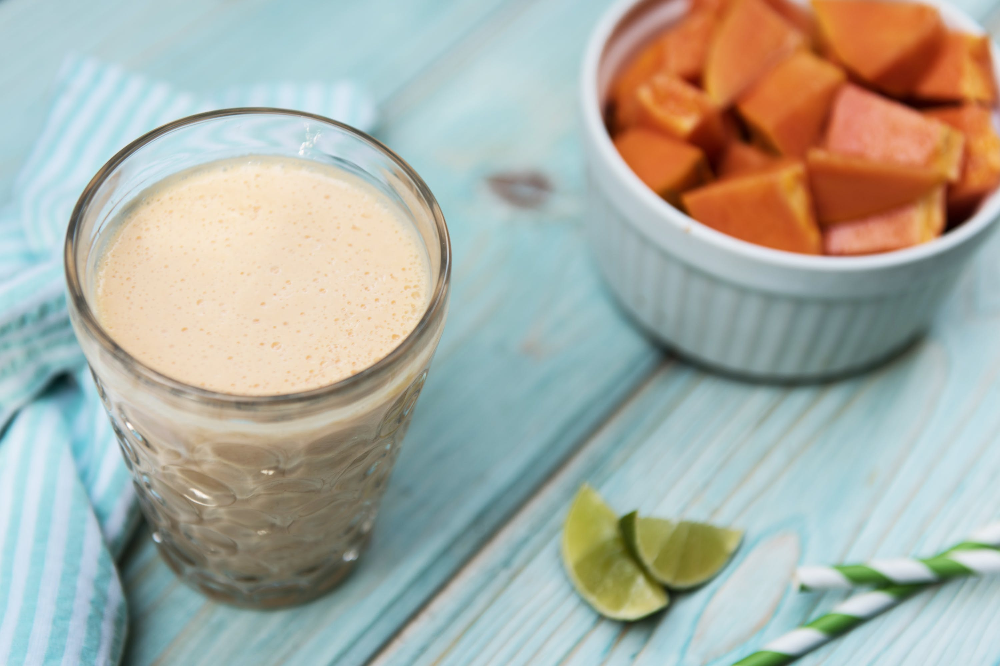

Papaya Creamsicle
This tropical creamsicle smoothie is the perfect summertime smoothie to keep you cool and satisfied! Papaya is full
of antioxidants and enzymes that can help with digestion! It’s also naturally sweet and creamy, which will take your
smoothie-making game to another level of flavor! Enjoy its taste and health benefits, along with those of tangy lime
and sweet honey, in this deliciously creamy creamsicle smoothie!
INGREDIENTS
- Papaya
- Lime, peeled
- Plain Nonfat Greek Yogurt
- Honey
- Ice Cubes
- Unsweetened Coconut Milk
- 1 Cup
- 1/2
- 1/2 Cup
- 1 Teaspoon
- 1 Cup
- 1 1/2 Cups
DIRECTIONS
- Add all ingredients to your Tall Cup
- Extract for 30 seconds, or until smooth.
- Enjoy!